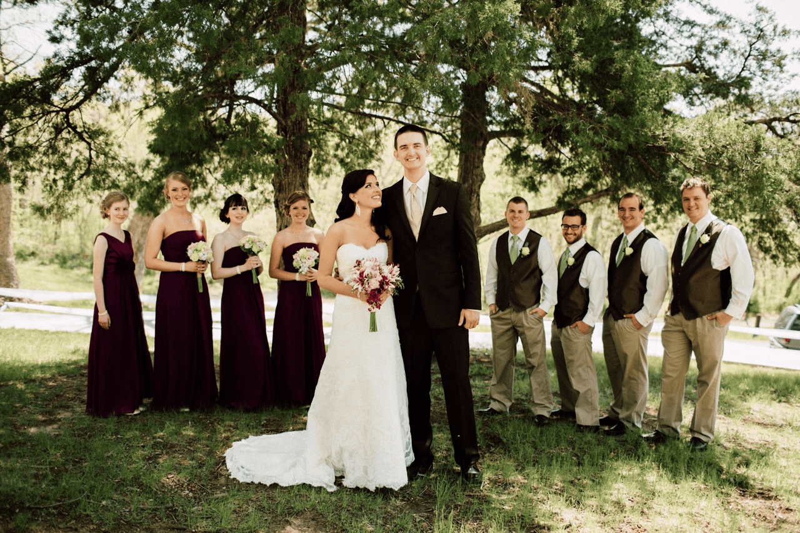

Tldr
Life is good. Melissa is great. I tracked 13 years. Some philosophy mumbo jumbo.
Broken Records
Broken Record: LIFE’S GOOD, LIFE’S GOOD
I know I sound like a broken record here, but I’ve never been so happy to repeat myself.
Broken Record: Best 12 Years
Twelve wonderful years ago this photo was taken:

The next 4,383 days between then and today have been an absolute dream. Melissa is the best life partner one could ask for. The best part of my day and my best friend. She’s excelling in her own right - and together we’re making the most of this one life we get.
Tip
Marry someone great, and life is great!
Broken Record: Health & Fitness
I can’t really back this one up. I think numerically I’ve maybe been more fit at some point in my life, but right now feels reaaaaal close. Defining fitness is hard anyway. Let’s put it this way - I’ve never felt more “where I want to be” in terms of fitness than I do now.
Unrelated Topics
A Philosophy for Life
One of my philosophies on life is that we (probably should) seek to maximize the “good” in the world… and realize a few truths simultaneously:
- “Good” is a matter of perception - if something “good” happens in a forest and nobody’s around to experience it, did good happen? I’d argue no.2
- “Good in the world” is a sum of all goods perceived by any - if I experience a little joy, good in the world has happened. If a squirrel finds a particularly good acorn and is happy, good in the world happens.
- What’s “good” varies from being to being - different societies and different individuals within each society have different values, which are what our basis for “good” is.
- Bad offsets good - this one is simple, but taking candy from a baby is “good” for the taker, but bad for the baby. Humans3 suffer from loss aversion. In short, it the pain of losing 1 candy bar is worse than the pleasure of gaining 1 candy bar.
- Diminishing returns is a thing - going from 9 candy bars to 10 candy bars not the same as going from 0 candy bars to 1 candy bar.
- We should try to bring “goodness” unto others - doing this properly would necessitate understanding what they value - it’s an example of The Platinum Rule.
- We have limited influence over others - you cannot control whether or not someone else has “good” experiences, really.
- You are a part of the world - experiencing joy and other things you value is a reliable method (but cannot be the only method) through which you bring more good into the world.
- Taking care of yourself allows you to take care of others - if you burn yourself out focusing on taking care of others, then your ability to take care of others diminishes. This is a case of philosophical P-PC Balance.
- Observe and adjust - you cannot know exactly what will make more good in the world. You can guess and check. I gave a person on the street $10. Is that good? I gave myself a rest and let an unimportant task slide. Is that good?
Thus:
Maximize perceived good (yours and others’) by acting in line with what each values, while preserving your capacity to continue doing so.
13 Tracked Years
I didn’t need to write down how things have gone over the past 12 years to know they were wonderful, but I did write them down. My Data Journal celebrated its 13th birthday since my last post. It’s chugging along stronger than ever. Maybe I’ll celebrate more when it its 5000th day.
Wordplay
I love wordplay. I’ve made many decisions simply because I thought of a funny name or double meaning for something. If I can go “oh this mean this and that”, then it’s probably going to become a thing.
See: Gillespedia
See: The Brief Mystery
See: The Column you just finished reading.
Top 5: Long-term Goals I Recently Accomplished
In chronological order.
5. I moved to a house I love in a spot I love that’s great for our family
4. I found health and productivity systems that are working well
3. Created a grand opus description of my Data Journal
2. Got Master’s Degree in a field I’m interested in
1. Got a job I’ve aimed at for years
Quote:
Slippery fish. Slippery fish. Sliding through the water. - Melissa’s latest song stuck in my head